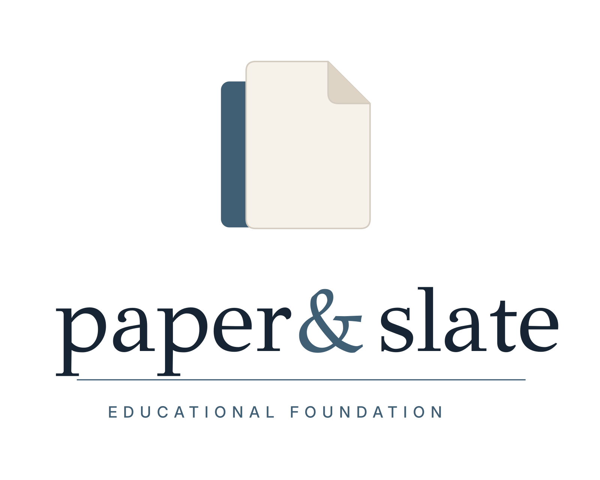
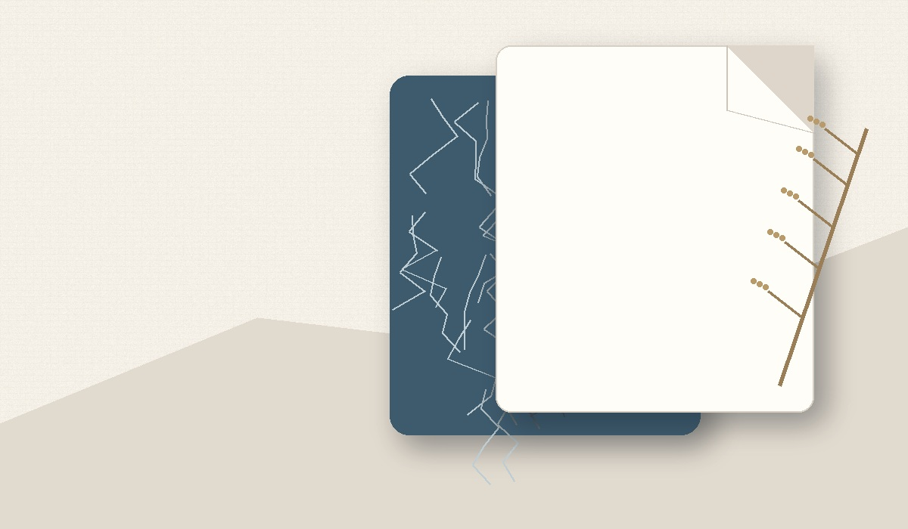
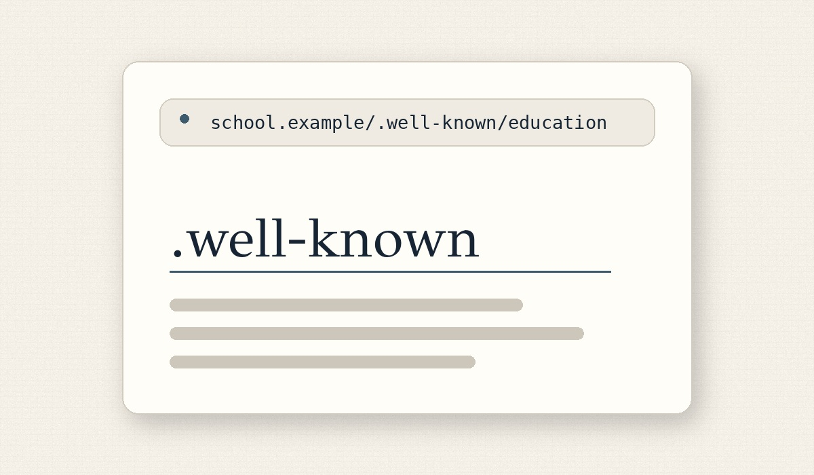
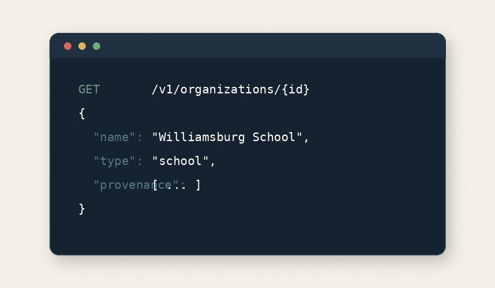

Brand identity system
Paper & Slate

Logo family



Color system
Foundation Ink#172433
Slate#405F74
Open Blue#5F7F93
Mist#E6EEF0
White Paper#FFFDF8
Paper#F7F2E9
Linen#EEE8DD
Stone#D9D2C6
Sage / Stable#758F82
Amber / Draft#D6A25E
Clay / Warning#B87566
Violet / Experimental#7D7694
Typography
Open systems.
Bodoni Moda
Display headlines and editorial moments. Use Regular or Medium with restrained line lengths.
Built for education.
Inter
Interface, navigation, body copy, labels, and data-heavy documentation.
GET /v1
{ type: "school" }
{ type: "school" }
IBM Plex Mono
Code, identifiers, filenames, and machine-readable examples.
Interface language
Icons
▤
◎
◇
⌁
↗
Use Phosphor Regular for interface icons and Duotone sparingly for feature illustrations. Keep strokes quiet and consistent.
Controls & status
Imagery & material




Editorial still life, soft natural light, tactile paper and linen, real slate or slate-colored materials, restrained props, and generous negative space. Avoid generic classroom stock photography and visual clutter.
Usage principles
Open educational infrastructure
Common infrastructure education has been missing.
Dark mode uses warm paper text rather than pure white and preserves slate-blue accents.
Explore projects →Clear spaceKeep at least one folded-corner width around every logo lockup.
Minimum sizeHorizontal logo: 180px digital. Icon: 20px minimum, 32px preferred.
TextureUse linen texture at low contrast; never place texture inside the wordmark artwork.
ContrastUse the dark logo on Paper/White Paper and the light logo on Foundation Ink or darker photography.
VoiceCalm, precise, public-minded, technically credible, and never sales-led.
Legal accuracyDo not claim registered nonprofit status until it exists.